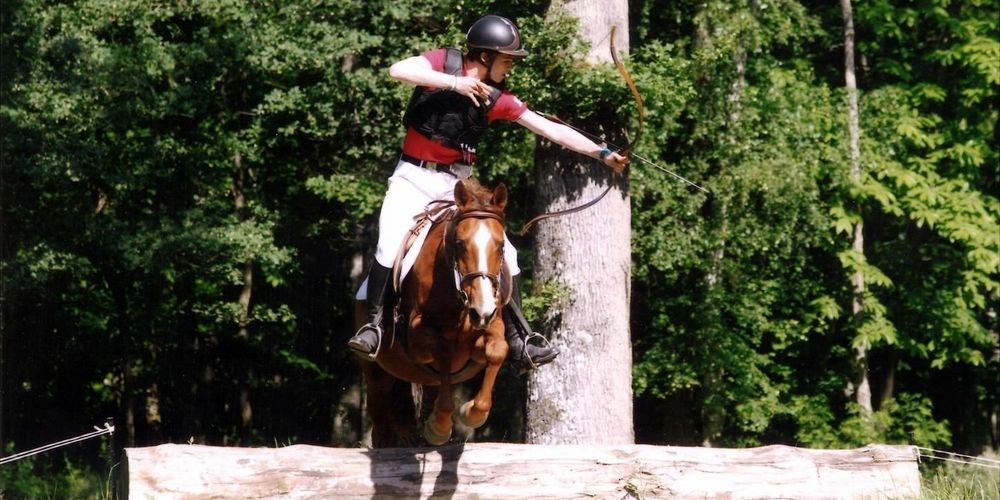

La voltige est une discipline qui peut se pratiquer à plusieurs ou seul.Elle consiste a faire différentes figures sur un équidé.Il peut y avoir des compétitions avec des figures imposées ou en libre(aucune de figures imposée).On peut pratiquer ce sport en loisir sans avoir d'objectif particulier.Voici quelques figures de base simple et facile a réaliser: Figure de base en voltige
Le tir a l'arc a cheval est comme l'indique son nom,une disciple où le cavalier tir a l'arc sur un cheval.Pour la pratiquer il faut savoir tirer a l'arc et monter a cheval.Il y a plusieurs niveaux.En effet il peut y avoir une cible a 30m jusqu'a 150m.
